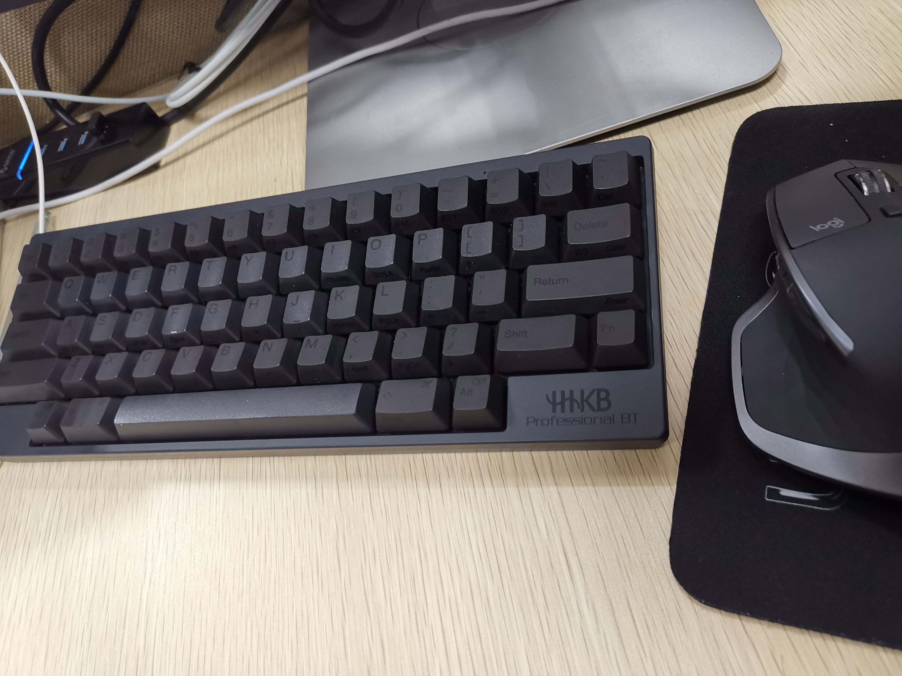

萌新的hhkb上手教程
hhkb镇贴
靠着导师发的补贴买了个梦寐以求的hhkb，发现hhkb上手有点难度，特别是没有经常使用vim、emacs的玩家，所以边用着hhkb，边收集了一些教程，用于降低萌新的上手难度。

方向键
因为hhkb自带的方向键需要;'[/ + fn使用，但是fn和这几个键都在右手，很是变扭，所以我一般会使用mac的全局快捷键：
移动：
control + f: ➡️， 右移一个字符，f表示forward（向前）control + b: ⬅️， 左移一个字符，b表示back（向后）control + p: 👆， 往上一个字符，也可以是往前移动一个，比如终端里返回上一个命令，p表示previous（之前）control + n: 👇， 向下一个字符，n表示next（下一个）control + a: 移动光标到当前行的开头，a表示ahead（头部）control + e: 移动光标到当前行的末尾，a表示ahead（头部）
删除
control + h: 删除光标前一个字符control + d: 删除光标后一个字符control + k: 删除光标到行尾的所有字符control + u: 删除整行
Vim
Vim模式
Vim有三种模式normal、insert、visual
默认打开模式是normal
- Normal在这个模式下，按键不能直接将字符插入至文件，而是执行各种命令。
- Insert插入模式，按键的字符是直接插入的。
- visual可视模式，按住鼠标能够直接进行选择
普通模式切换到插入模式：
| 按键 | 描述 | 助记 |
|---|---|---|
| i | 在当前光标字符前插入 | insert |
| a | 在当前光标字符后插入 | append |
| I | 在当前行首插入 | Insert |
| A | 在当前行尾插入 | Append |
| o | 在下方开一新行，再插入 | open |
| O | 在上方开一新行，插入 | Open |
普通模式切换到可视模式：
| 按键 | 描述 | 助记 |
|---|---|---|
| v | 选中当前光标字符，并进入可视模式 | visual |
| V | 不同于小写 v，这时移动光标只会按行选择 | Visual |
| 块选择模式，此时移动光标会选择一个矩形块 |
可视模式切换到输入模式：
| 按键 | 描述 | 助记 |
|---|---|---|
| s | 删除当前已选择的内容，并进入插入模式 | |
| c | 删除当前已选择的内容，并进入插入模式 | change |
| di | 删除当前已选择的内容，并进入插入模式 |
可视模式到普通模式：
| 按键 | 描述 | 助记 |
|---|---|---|
| y | 复制当前选择区域，并退出可视模式 | yank |
| Y | 复制当前选择区域（按行），并退出可视模式 | Yank |
Normal模式
常用命令
| 按键 | 描述 | 助记 |
|---|---|---|
| p | 粘贴于当前光标之后 | paste/put |
| P | 粘贴于当前光标之前 | Paste/Put |
| x | 删除当前字符，相当于 dl | |
| s | 删除当前字符并插入，相当于 cl | |
| C | 删除至行尾并插入，相当于 c$ | |
| D | 删除至行尾 | |
| S | 从当前行首个非空字符删除至行尾并插入，相当于 ^C | |
| u | 撤销上一次修改 undo | |
| 重做上一次修改，u 的逆过程 | redo | |
| . | 在当前光标处重复上一次修改 | |
| r | 替代字符，将当前字符替代为紧跟着输入的字符 | replace |
| R | 进入替代模式，将当前及之后的字符都替代为紧跟着输入的字符串，直到按 |
Replace |
移动命令
每次移动一个字一行
| 按键 | 描述 |
|---|---|
| h | 光标左移 |
| j | 光标下移 |
| k | 光标上移 |
| l | 光标右移 |
使用数字加移动命令来实现一次移动多个字符：
| 按键 | 描述 |
|---|---|
| n+h | 光标左移 n 个位置 ，n(umber) 指数字 |
| n+j | 光标下移 n 个位置 ，n(umber) 指数字 |
| n+k | 光标上移 n 个位置 ，n(umber) 指数字 |
| n+l | 光标右移 n 个位置 ，n(umber) 指数字 |
其他的常见移动光标命令：
| 按键 | 描述 | 助记 |
|---|---|---|
| 0 | 跳到行首，可以理解为无穷大的h | |
| ^ | 跳到行首开始的第一个非空白字符 | |
| $ | 跳到行尾，可以理解为无穷大的l | |
| gg | 跳到首行，可以理解为无穷大的k | |
| G | 跳到末行，可以理解为无穷大的j | |
| w | 跳到下一个词首 | word |
| b | 跳到上一个词首 | back-word |
| e | 跳到下一个词尾 | end |
| ge | 跳到上一个词尾 |
数字+移动命令都可以使用，比如5w表示移动5个单词
操作命令
删除、修改、复制等
| 按键 | 描述 | 助记 |
|---|---|---|
| c | 删除，并进入插入模式，删除单词 | change |
| d | 删除 | delete |
| y | 复制 | yank |
| gu | 变为小写字母 | |
| gU | 变为大写字母 | |
| g~ | 颠倒字母的大小写 | |
| > | 右缩进 | |
| < | 左缩进 | |
| = | 自动缩进 |
移动命令+操作命令
dl：向右删除一个字符（删除当下字符，右侧字符不会被删）；
dh：向左删除一个字符（删除左侧字符，当下字符不会被删）；
d3l：向右删除 3 个字符（3dl 亦有相同效果，下同）；
d3w：删除文本至右侧第三个词首之前；
de：删除当下字符至下一个词尾；
y2w：复制当下位置至右侧第二个词首之间的文本；
gUe：将当下字符至下一个词尾变成大写；
行操作：连续两次操作命令
按键 描述
cc 删除整行，并进入 insert （插入）模式
dd 删除整行
yy 复制整行
guu/gugu 整行变为小写字母
gUU/gUgU 整行变为大写字母
g~~/gg 颠倒整行字母的大小写>> 行右缩进
<< 行左缩进
== 行自动缩进
Visual模式
可视模式下，不再需要指定移动多少来进行操作，直接选取后按下操作符就行
分割布局
使用:sv <filename>命令打开一个文件，这样是纵向分割，新文件会在下方打开，:vs <filename>命令横向分割，新文件在右边打开
在.vimrc里输入
1 | set splitbelow |
访问缓冲区
缓冲区保存最近使用的文件，:b
代码折叠
在.vimrc里输入
1 | " Enable folding |
这样就可以输入za来启用折叠代码，或者用下面的快捷键
1 | " Enable folding with the spacebar |
我自己经常用的命令
跳转，经常使用vim查看日志，需要跳转到最后一行，原来vim是有这个快捷键的，shift+g：跳转到最后一行，gg：跳转到第一行
cVim
cVim是chrome浏览器里的vim扩展
常用快捷键：
j ： 网页向下滚动
k：网页向上滚动
d： 网页向下滚动半屏
e：网页想上滚动半屏
G：网页滚动到底部
gg ： 网页滚动到顶部
r：刷新页面
cr : 刷新出当前页面外的其他页面
x：关闭当前标签
X：打开刚刚关闭的标签
<和>：向前或者向后移动当前标签（需要shift，capslock不好使）
g0：使得第一个标签变为活动标签
g$：使得最后一个标签变为活动标签
f：用大写字母在网页中标出所有链接，输入框。当输入对应的字母时（此时不区分大小写）打开链接或者使输入框获得焦点。
Tmux
在mac上使用brew install tmux安装
Tmux 快捷键 & 速查表
Tmux启动相关命令：
启动新会话：tmux [new -s 会话名 -n 窗口名]
恢复会话：tmux at [-t 会话名]
列出所有会话：tmux ls
关闭会话：tmux kill-session -t 会话名
关闭所有会话：tmux ls | grep : | cut -d. -f1 | awk '{print substr($1, 0, length($1)-1)}' | xargs kill
Tmux前缀相关命令
在 Tmux 中，按下 Tmux 前缀： ctrl+b，然后输入：
1. 会话
:new<回车> 启动新会话
s 列出所有会话
$ 重命名当前会话
2.窗口 (标签页)
c 创建新窗口
w 列出所有窗口
n 后一个窗口
p 前一个窗口
f 查找窗口
, 重命名当前窗口
& 关闭当前窗口
调整窗口排序
swap-window -s 3 -t 1 交换 3 号和 1 号窗口swap-window -t 1 交换当前和 1 号窗口move-window -t 1 移动当前窗口到 1 号
窗格（分割窗口）
% 垂直分割
“ 水平分割
o 交换窗格
x 关闭窗格
⍽ 左边这个符号代表空格键 - 切换布局
q 显示每个窗格是第几个，当数字出现的时候按数字几就选中第几个窗格
{ 与上一个窗格交换位置
} 与下一个窗格交换位置
z 切换窗格最大化/最小化
同步窗格
这么做可以切换到想要的窗口，输入 Tmux 前缀和一个冒号呼出命令提示行，然后输入：
:setw synchronize-panes
你可以指定开或关，否则重复执行命令会在两者间切换。
这个选项值针对某个窗口有效，不会影响别的会话和窗口。
完事儿之后再次执行命令来关闭。帮助
调整窗格尺寸
如果你不喜欢默认布局，可以重调窗格的尺寸。虽然这很容易实现，但一般不需要这么干。这几个命令用来调整窗格：
PREFIX : resize-pane -D 当前窗格向下扩大 1 格
PREFIX : resize-pane -U 当前窗格向上扩大 1 格
PREFIX : resize-pane -L 当前窗格向左扩大 1 格
PREFIX : resize-pane -R 当前窗格向右扩大 1 格
PREFIX : resize-pane -D 20 当前窗格向下扩大 20 格
PREFIX : resize-pane -t 2 -L 20 编号为 2 的窗格向左扩大 20 格
参考
Chrome vim扩展 之 cVim 插件 键盘党的利器
vim入门教程
配置python环境
Tmux 快捷键 & 速查表
- 本文链接：https://ssdemajia.github.io/2019/03/27/%E8%90%8C%E6%96%B0%E7%9A%84hhkb%E4%B8%8A%E6%89%8B%E6%95%99%E7%A8%8B/
- 版权声明：本站所有文章除特别声明外，均采用 CC BY-NC-SA 3.0 CN 许可协议。转载请注明出处！